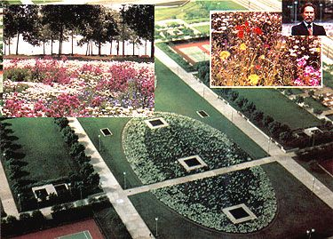
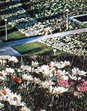
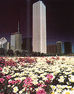

Ten years ago, artist Chapman Kelley looked out an airplane window at the Dallas Fort Worth airport far below and realized he was looking at a gigantic canvas. Scored by concrete roadways and runways separating areas of clipped grass, the surface cried out for color . . . and perhaps more important, for something to reconcile the man-made construction with the natural world which it had displaced. In short, Chapman Kelley had a vision: He saw that the lines of tarmac could become geometrical strokes in a painting, as natural divisions between masses of rich color-and he realized that those hues could be supplied by millions of native wildflowers.
The vision was exciting not only to Kelley, but to the airport officials as well. With their support-and seeds purchased with his own money-Kelley planted a four-mile strip of ground with bluebonnets; by the following spring, this first of his wildflower works was a blazing blue ribbon across the land. Four years later, working with the Dallas Museum of Natural History, the Dallas Parks Department, and the Department of Transportation, Kelley transformed the four acre grounds of the museum into a vivid design in primary colors.
Chapman's first landscaping projects were planted from seed. His most recent "painting," however, is the Chicago Wildflower Works I, a magnificent display covering 66,000 square feet at the north end of Grant Park, planted entirely with seedling "plugs" developed by Iverson Perennial Gardens. More complicated than the artist's earlier designs, Wildflower Works I fea tures two gigantic ovals, each approximately the size of a football field, which have been filled with a color-coordinated, sequentially blooming mass of poppies, evening primroses, sage, daisies, larkspurs, cosmos, and other bright flowers, ringed with ten-foot borders of white blossoms. From the air, or from a high window in one of the surrounding skyscrapers, the gardens look like an exquisite needlepoint pattern, one whose colors shift gradually over the growing season from white and purple to white and yellow, with blue, red, and maroon deepening the centers of the ovals. Kelley's commitment to Wildflower Works I and the philosophy behind it is profound: His artistry, his time, his labor, and his money-some $350,000 of it-have gone into the creation of this masterwork. He plans to devote another eight or ten years to perfecting and studying the garden, and figures it will cost him about $1 million before he's done-money earned primarily through sales from his personal art collection and his own wildflower paintings. Like famed landscape designer Daniel Burnham, who declared that "ultimately, beauty is the best investment," Kelley believes his money is well spent. "Some of us really want to leave the world a better place than we found it," he says, and he hopes his wildflower plantings will inspire other people to finance similar projects elsewhere.
However, if beauty doesn't move potential backers, the concept's economy and sheer common sense might. For a number of years now, enlightened gardeners and landscape architects have called for the use of native plants rather than labor-intensive, resource-depleting grass or costly exotic (nonnative) flowers. From seeding to watering, liming, and fertilizing, and on through repeated mowing, raking, and reseeding, grass requires more work hours, materials, and equipment than any other living ground cover in regular use. And exotic flowers, including such standbys as imported spring bulbs and hybrid annuals, may demand soil amendments, watering, fertilizing, and pest control measures that are unnecessary for hardy native varieties.
Unfortunately, there's still a shortage of information concerning wildflower propagation, landscaping, and management . . . also, there's a commonly held conception of native plants as weeds, to be removed and replaced with "real" flowers. Kelley hopes that his projects will help to change all that. If, he feels, he can encourage people to think in terms of beautiful, low-maintenance wildflowers for public (and also private) properties, the money that's saved could then be "recycled" into additional public landscape improvements and would eventually lead to higher property values for surrounding neighborhoods.
Kelley is now at work on a proposition for the 1992 Chicago World's Fair. And if things work out as he and his supporters hope, 1992 just might be the happiest World's Fair ever. One Chicagoan, whose high-rise home overlooks Wildflower Works I and who volunteered to help on the project, has commented, "I've never talked to an angry person out there." Now that's an intriguing observation.
Just imagine the whole earth in bloom.
|
 THIS PAGE: Top Left: Lake Michigan shimmers behind colorful wildflower plantings. Top Right: Chapman Kelley. Bottom: Aerial view of Wildflower Works I in Chicago's Grant Park with an inset of the brilliant blooms. |
 Top: Visitors enjoy the massive display. Below: Daisies and gaillardias. |
 Wildflower Works I seen against the dramatic Chicago skyline. |